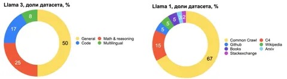

Сегодня расскажем о том, как устроен претрейн-датасет для LLaMA 3.1. Разработчики этой LLM поделились множеством подробностей, поэтому будет интересно.
Одна из важнейших характеристик LLaMA 3.1 — объём данных, на которых она обучалась. Для этой модели использовался претрейн-датасет из 15 триллионов токенов. Это один из самых больших наборов данных для языковых моделей, превосходящий, например, LLaMA 2 с её 2 триллионами токенов. Модель также включает специальный набор данных для длинных контекстов.
Сбор данных для LLaMA 3.1 построен на стандартном пайплайне для обработки текста из HTML. Один из его ключевых аспектов — это фильтрация данных на ранних стадиях. Она включает как дедупликацию данных, так и использование эвристических методов для удаления нежелательных токенов.
Кроме того, команда разработчиков использовала кастомные парсеры для специфических доменов, таких как математика и программирование. Это позволило улучшить качество обработки данных для узкоспециализированных задач. Кастомный парсер способен сохранить точное форматирование математических формул, тогда как обычные парсеры теряют важную информацию.
LLaMA 3.1 демонстрирует хорошие результаты благодаря специальным пайплайнам для математических задач и задач, связанных с программированием. Объем данных по коду и математике в датасете LLaMA 3.1 превосходит весь датасет оригинальной LLaMA.
Для оценки качества данных использовались различные классификаторы, полученные дистилляцией LLaMA 2. Другие классификаторы отбирали документы, опираясь на вероятность их принадлежности к определённому домену. Один из интересных моментов — использование классификаторов для оценки доменов с целью дальнейшего перевзвешивания различных частей датасета. Например, данные из области искусства и развлечений могут быть уменьшены в весе по сравнению с математикой.
Фильтрация включает несколько уровней дедупликации. Во-первых, стандартная дедупликация с использованием метода MinHash. Есть также локальная дедупликация — метод, при котором данные разбиваются на блоки, и дубликаты удаляются только внутри этих блоков.
Ещё одной важной частью фильтрации данных стала проверка на безопасность. Разработчики LLaMA 3.1 реализовали специальные фильтры для удаления вредоносного или небезопасного контента. Эти фильтры основаны на классификаторах и могут удалять не только нежелательные токены, но и данные с персональной информацией.
LLaMA 3.1 также выделяется своими экспериментами в области Data Mixer — процесса, в котором данные разделяются по доменам, а затем перевзвешиваются для оптимальной работы модели.
Важным этапом оптимизации стал так называемое «сведение». Это метод, при котором на последних этапах обучения модель дообучается на малом наборе данных, включающем специфичные задачи. Это позволяет значительно повысить качество ответов модели на конечных тестах. В ходе экспериментов установили, что даже небольшой объём высококачественных данных может существенно улучшить результаты.
Разбор подготовил
Душный NLP
